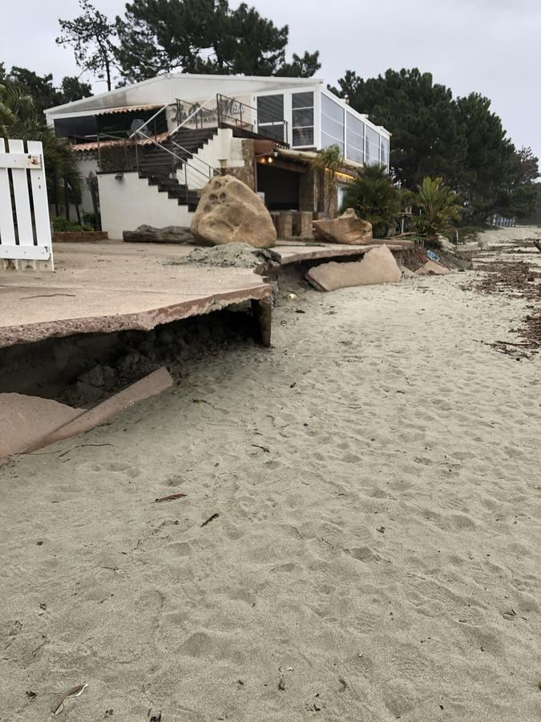
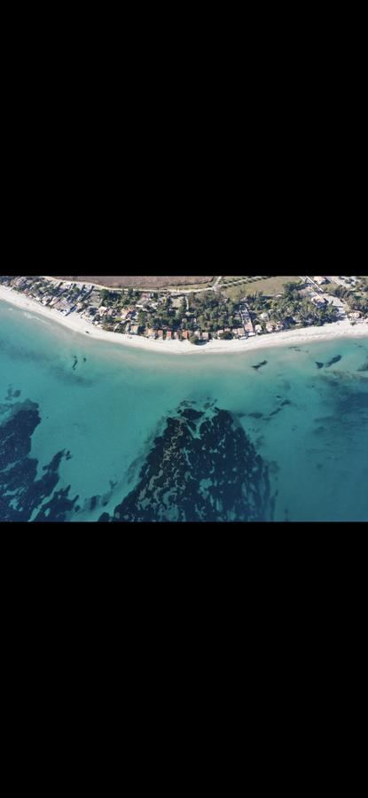
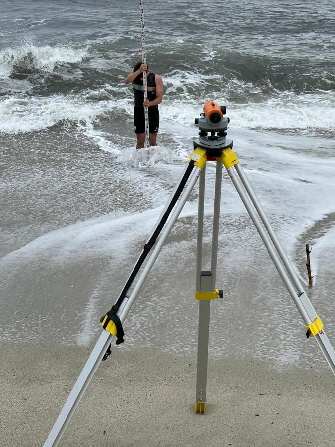
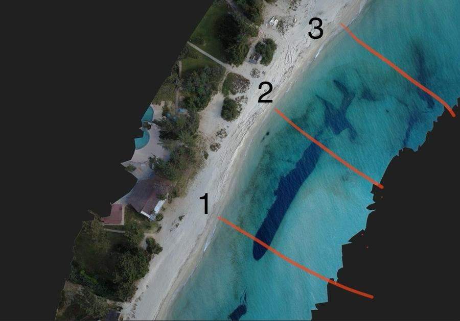
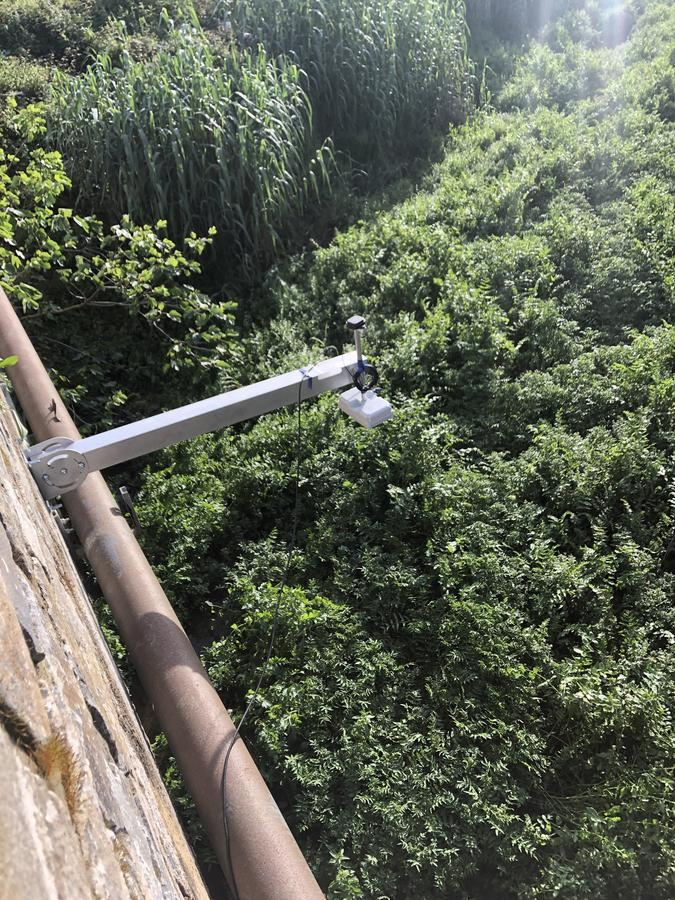
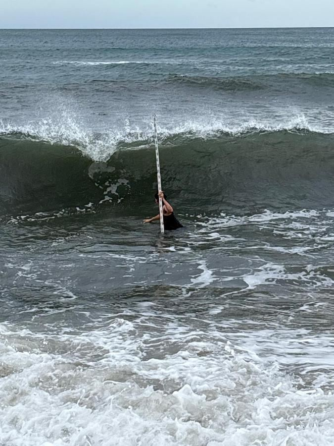
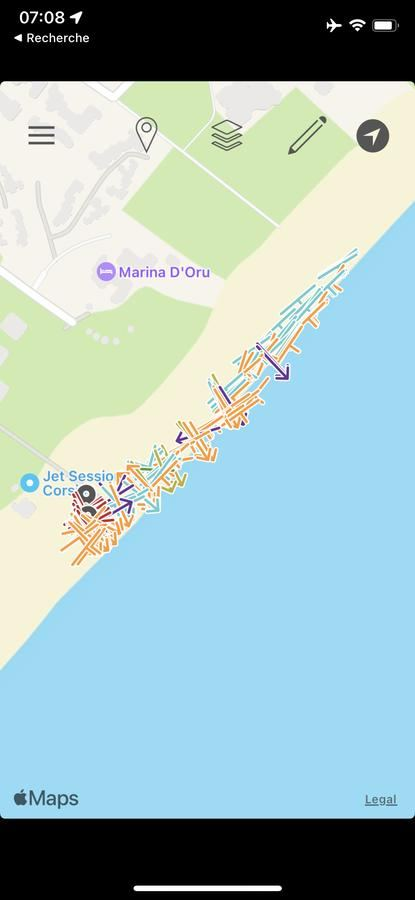
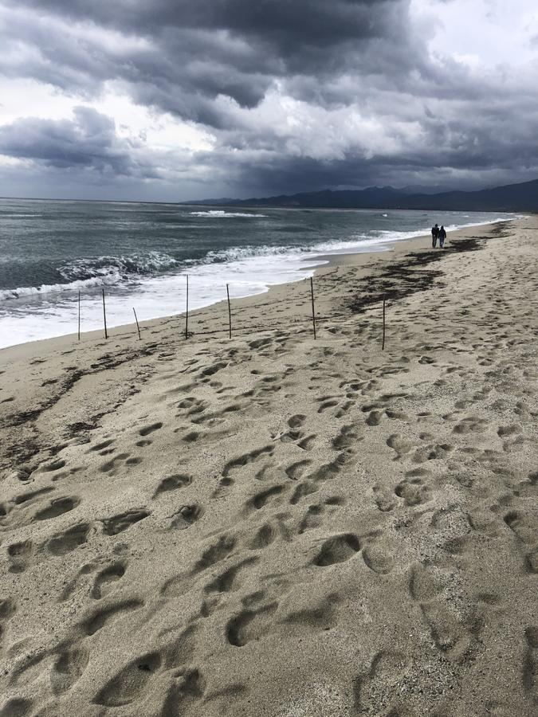
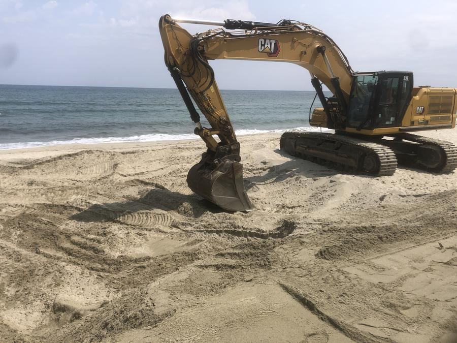
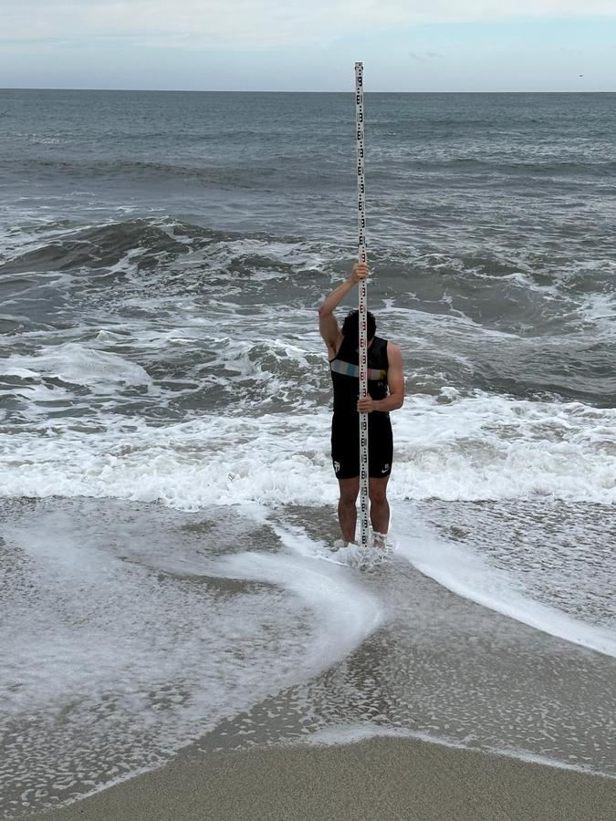

Expertise indépendante en hydraulique fluviale, risques côtiers et cartographie SIG, au service des territoires du Sud de la France.
Littor'eau est un cabinet d'ingénierie indépendant en hydraulique, risques côtiers et cartographie SIG, fondé par Alexis Camand, formé à l'Université de Montpellier.
Du diagnostic terrain à la modélisation, du LiDAR HD au drone : une expertise complète, réactive, ancrée dans le Sud de la France.
Avant d'être un rapport, la connaissance du littoral, c'est des heures passées à pied, en mer, sur les plages.
Spécialisations Eau & Littoral et Gestion des Mers, Université de Montpellier.
Une connaissance directe du milieu littoral et de ses dangers. Pas seulement en théorie.
Suivi morphodynamique quotidien du littoral corse, 2024–2025. Voir le terrain →
1 000 km à pied, 28 jours, tout le littoral méditerranéen français documenté sur le terrain. Découvrir la Marche →
Deux interventions récentes, du diagnostic à la donnée de terrain. Le détail complet est disponible plus bas.
5 mois de mission continue · 2024–2025
Profils de plage, drone, bathymétrie, sédimentologie : 7 km de littoral suivis avec la Mairie de Ghisonaccia.
Note d'avis technique · Marche Méditerranée 2026
Note d'avis technique pour un camping audois/héraultais exposé à l'érosion : diagnostic et recommandations remis à l'exploitant.
Ghisonaccia, Haute-Corse : profils de plage, drone, bathymétrie, sédimentologie, suivi du trait de côte sur 7 km.










28 jours. 1 000 km à pied. De Port-Bou à Vintimille. Une expédition de terrain pour documenter l'état réel de l'érosion côtière et de la submersion marine sur le littoral méditerranéen français en 2026.
Du 11 mai au 7 juin 2026, tout le littoral méditerranéen français parcouru à pied, de la Côte Vermeille à la Côte d'Azur, en passant par le Languedoc, la Camargue et la Provence. Drone, carnets de terrain, caméra.
Constat : les plages méditerranéennes reculent, certaines disparaîtront sous 10 à 20 ans. Littor'eau fait le lien entre donnée scientifique et décision locale.
Échanger sur les données récoltéesPhotogrammétrie, orthophotos, MNT des zones côtières traversées.
Données de terrain versées en open-source sur littor-eau.fr
Lycées et collèges sensibilisés de Port-Bou à Vintimille.
LinkedIn, Instagram et YouTube. La science littorale rendue accessible.
De Cerbère à Menton, des établissements, mairies et campings rejoignent la Marche Méditerranée. Contacts actifs dans 3 départements.
Master 2 à Ghisonaccia, Haute-Corse. Suivi morphodynamique quotidien d'une plage microtidale méditerranéenne.
5 mois de profils de plage quotidiens, bermes et scarpes mesurées, géoréférencées via l'appli Clino.
Vols drone exploitables sous QGIS, bathymétrie kayak jusqu'à 60 m : barres sableuses et herbiers de posidonie localisés.
Prélèvements sur 7 km : granulométrie, susceptibilité magnétique (37–235 µS), ICP-MS. Dérive Sud → Nord confirmée 9 jours sur 10.
Stage à la Mairie de Ghisonaccia : travail avec les élus sur érosion et posidonie, résultats intégrés à la décision communale.
Des projets concrets, des livrables réels.
Dossier Loi sur l'Eau, diagnostic des risques d'inondation et cartographie SIG LiDAR HD pour un établissement de plein air à Lunel.
Suivi morphodynamique quotidien, photogrammétrie drone, bathymétrie et analyses sédimentaires sur 7 km de littoral méditerranéen. Sensibilisation des campings littoraux exposés aux risques d'érosion et de submersion dans le cadre de la mission communale.
Interventions régulières en classes depuis 2021 sur les risques hydrauliques et littoraux. Conférence en amphithéâtre devant des classes de Terminale lors de la Semaine des Sciences, en février 2025.
Vous avez un territoire à diagnostiquer, une zone à cartographier ou une étude réglementaire à mener ? Discutons-en.
Des prestations techniques précises, livrées avec clarté, pour des clients qui n'ont pas besoin de jargon mais de solutions.
Modélisation des écoulements sous HEC-RAS, cartographie des zones inondables, diagnostics de vulnérabilité des enjeux exposés. Appui réglementaire pour les dossiers PPRI, GEMAPI et PAPI.
Érosion du trait de côte, submersion marine, dynamiques littorales et sédimentaires. Études réglementaires PPRL et suivi morphologique du littoral dans la durée.
MNT haute résolution à partir de LiDAR HD IGN, cartographie d'aléas naturels, orthophotos et analyses spatiales sous QGIS pour l'aide à la décision.
Photogrammétrie aérienne, modèles 3D et orthophotos haute précision, pour les littoraux, zones humides et sites difficiles d'accès.
Rédaction de cahiers des charges et montage de dossiers Loi sur l'Eau, PPRI/PPRL. Interface technique entre collectivités, bureaux d'études et services de l'État.
Interventions de sensibilisation auprès des élus, des équipes techniques et des lycées. Risques naturels et littoraux vulgarisés, adaptés à chaque public.
Les incendies déstabilisent les bassins versants et accélèrent l'érosion en aval. Étude de propagation (vent, pente, végétation, historique Prométhée) et diagnostic de conformité OLD.
Étude hydrogéologique préalable et pilotage d'une prospection géophysique pour localiser la ressource avant tout forage. Montage du dossier loi sur l'eau, suivi de chantier confié à un foreur certifié Qualiforage.
Profils de plage et suivi du trait de côte sur transects fixes, bathymétrie légère en zone peu profonde, analyses sédimentaires (granulométrie, dérive littorale). Une méthodologie éprouvée sur le terrain corse pendant 5 mois.
Des acteurs publics et privés qui ont besoin d'une expertise technique accessible, réactive et ancrée dans le territoire.
Communes, intercommunalités, syndicats de rivières. GEMAPI, PAPI, diagnostics territoriaux.
Sous-traitance et partenariat hydraulique, SIG et modélisation.
Diagnostics vulnérabilité, plans d'évacuation, sensibilisation.
Expertise sinistres, évaluation aléas, analyse foncière en zone à risque.
Le Sud de la France concentre les territoires les plus exposés aux risques naturels : crues éclair, submersion marine, érosion du littoral.
J'y connais les acteurs locaux, les services instructeurs et les dynamiques hydrauliques. La Marche Méditerranée 2026 le confirme.
Cartographie, modélisation, rapports : aussi réalisables à distance, sur tout le territoire national.
Un diagnostic, une étude, un partenariat pour la marche ? Je vous réponds sous 24h.
Besoin d'une réponse plus rapide ? Appelez directement